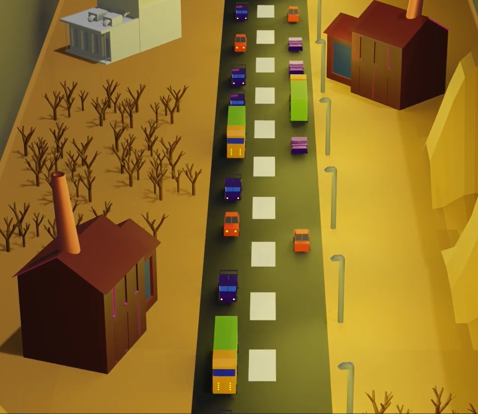
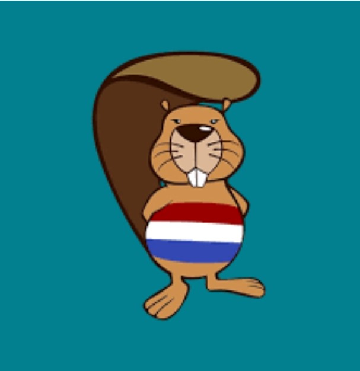
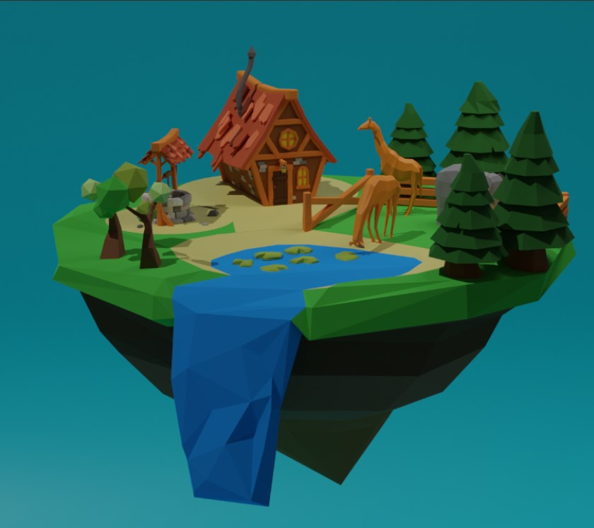

Project "a safe society"
In this project we had to show how we could make society safer by using robots and other forms of ict and programming. My group used a program called blender and there we made a video about the effects of climate change. my role in this group asignment was to help plan, make and animate objects for the video. at the time i was still pretty new to blender so i used de information from de lessons to make cars trees and other objects and then i animated them with the timeline in blender and rendered it. after that is sent the project to a other kid working with me and he edited it so it would look nicer.
the beaver competition
Every year the beaver competition gets played at my school and all coderclass students partcipate. If you won you would go to the finals which were national and so it is pretty hard to get there. unfortunatly i haven't gotten to the finals yet, but i've gotten pretty good scores and i'm hoping to get to the finals.
a blender project (blender-2)
This was also a project that i spent some weeks on. It was for the badge blender-2, but i found the end result very special and it showed how i evolved in between blender badges so i wanted to include it in this list. the project is based of a few Grant abbit tutorials asigned by my teacher. the tutorials gave me progression in low-poly modeling, which is a way of make rough shapes with low details. i made an elephant using the techniek from the tutorial and it went very wel. I'm hoping to do another blender project soon.